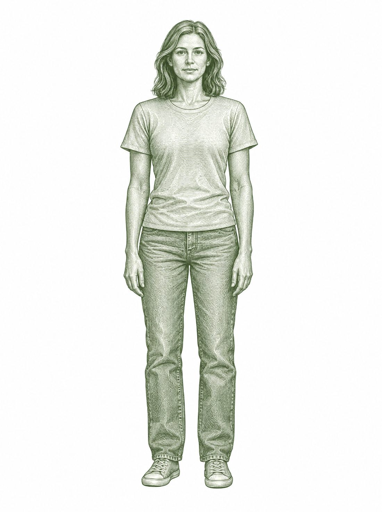
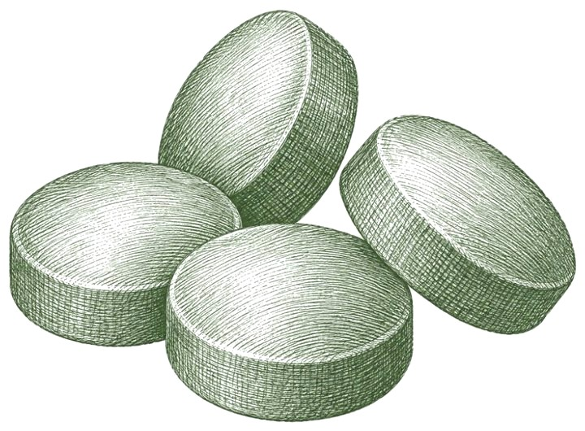
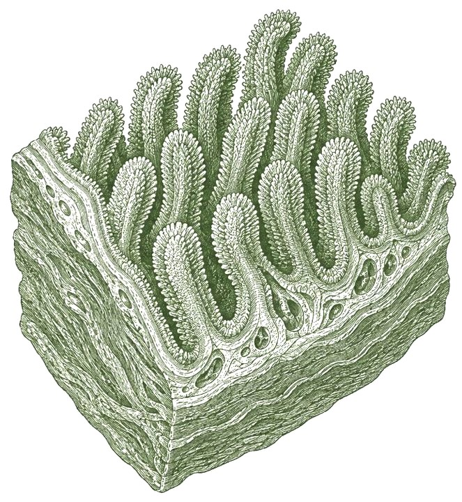
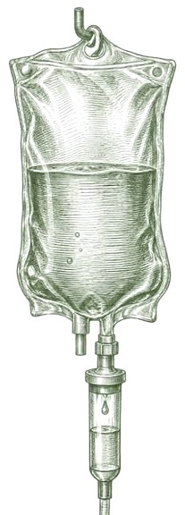
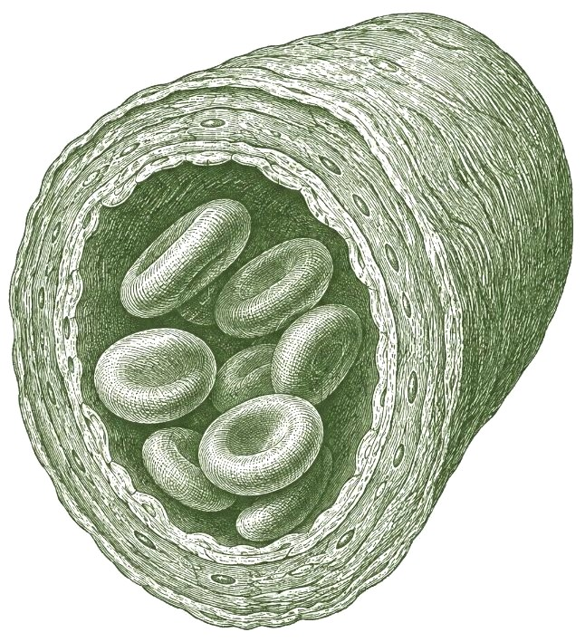
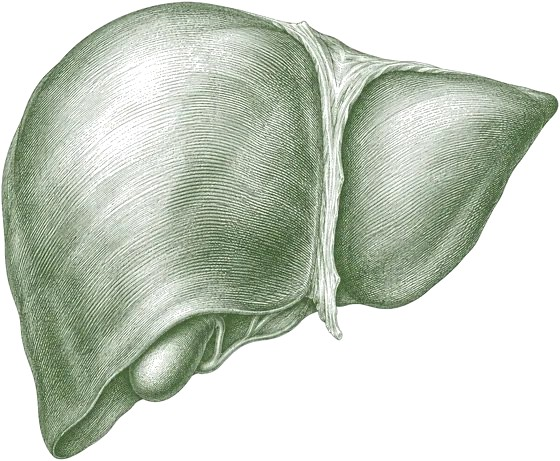
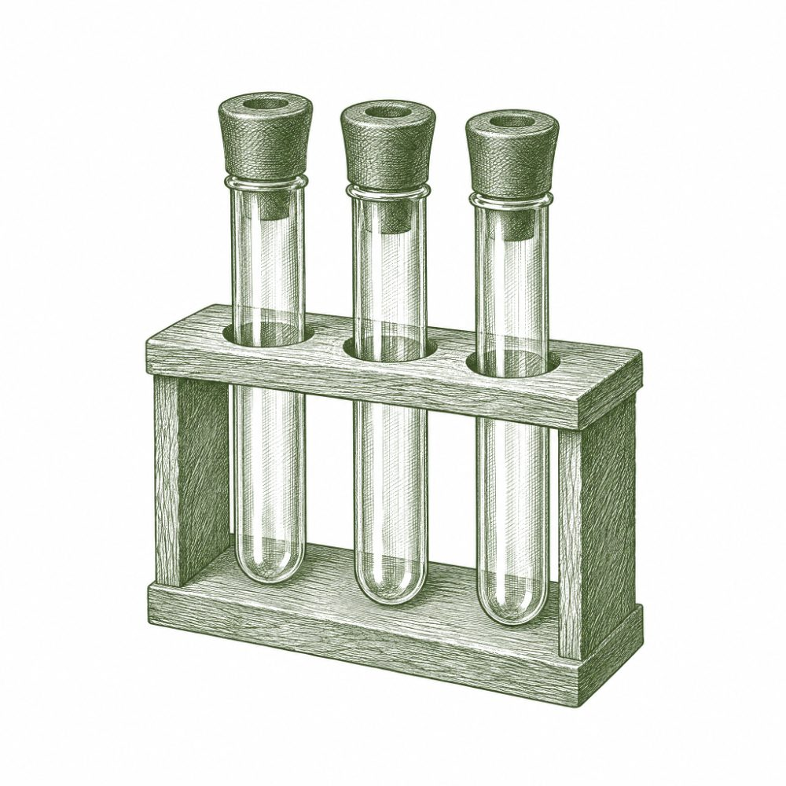

Low iron is one of the most common — and most missed — problems we see, especially in women. About 1 in 4 women of reproductive age have it. Many are told their bloodwork is “fine” while their iron sits at the bottom of the range.

Thinning hair Brain fog Pale skin Breathless on stairs Always-cold hands Restless legsThese symptoms can have many causes. An assessment with recent bloodwork is required before any treatment. Nothing you tap here is saved.
Pills are slow, poorly absorbed and hard on the stomach — and with heavy periods, a gut condition or perimenopause, you can lose iron faster than they replace it. IV iron skips the gut.





Kept mostly in your liver. Bloodwork measures them as ferritin.
Both routes fill the same stores. Fig. 3 shows how fast each one gets there.
Illustrative pattern of iron stores (ferritin), not patient data. Your NP checks yours with bloodwork at 6–8 weeks.
Pills and hospital infusions both work for many people. Here’s how the three compare.
The right first step for many — but slow, and hard on the stomach.
Effective — once you have a referral and get through the waitlist.
Book directly, get your iron in a calm clinic, and see the proof in your bloodwork.
With or without a referral, everyone meets our nurse practitioner before treatment. Pick the one that sounds like you.
Your family doctor or NP already found your low iron.
Along with your recent bloodwork.
We go over your labs and health history. If your bloodwork is recent, there’s usually nothing new to test.
Mostly checkboxes. Fax it with recent labs to (833) 370-0320.

No referral? No problem — start with us.
Virtually or in-clinic.
We order the tests for you, then go over the results together.
Join the waitlist and we’ll email you when booking opens.
If IV iron is right for you, your NP writes a prescription. Fill it at your pharmacy — drug plans often cover it.
A monitored 60–90 minute visit with an NP on site. Most people go back to their day after. Some need a second visit a week later.
Many people feel their energy return within 1–2 weeks. Follow-up bloodwork confirms your iron is back up — with a plan if it needs more.
Optimal has cared for hundreds of members across Barrie and Simcoe County since 2024. Every infusion follows a written safety protocol — a full assessment first, an NP on site the whole time, emergency equipment ready — in a space built around your comfort, not a hospital hallway.
Rubeana Deol is a nurse practitioner and the Clinical Director at Optimal Clinic, and a provider in the Longevity Core program. Years in emergency medicine showed her how often illness is caught late, and that turned her focus to prevention.
No membership required. Waitlist members lock in the founding rate for their first treatment.
Detailed receipts for insurance and health spending accounts. Lab tests are billed at standard Ontario rates. Final prices are set at launch.
If our NP finds IV iron isn’t right for you, you won’t pay for the infusion — and your assessment fee is credited toward any other care at Optimal.
{{ f.a }}